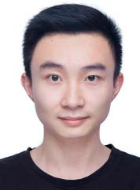
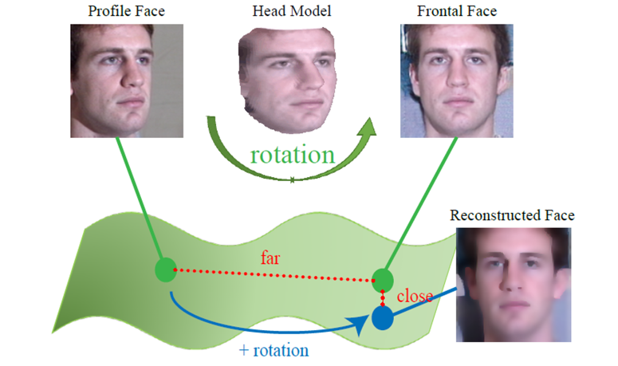
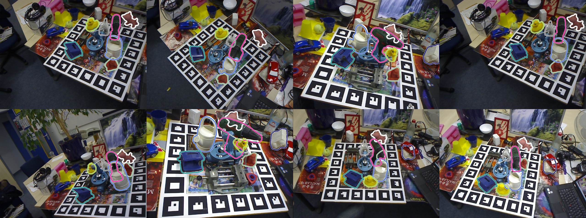
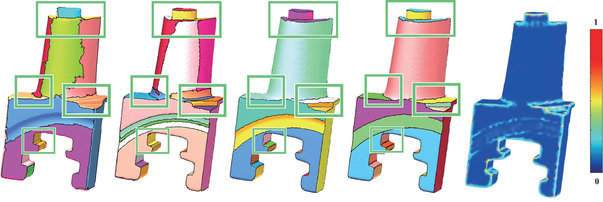
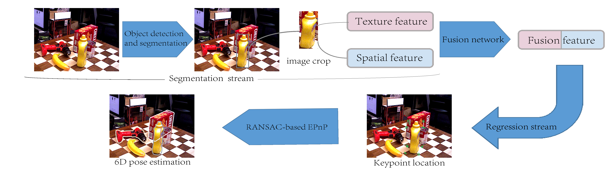
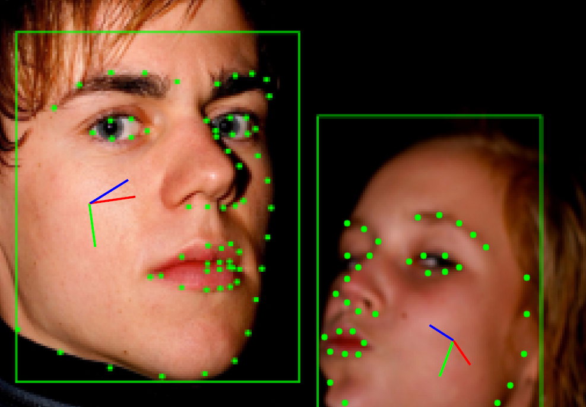
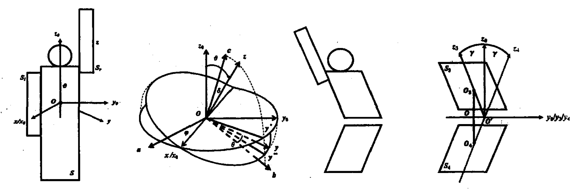

|  |
Xiaolong Yang （杨小龙）
|
Biography
I am currently pursuing my PhD degree at Academy of Mathematics and Systems Science of the Chinese Academy of Sciences (AMSS, CAS) and University of Chinese Academy of Sciences (UCAS) . My supervisor is Xiaohong Jia . Before that, I received my Bachelor's degree of Information and Computing Science from Northwestern Polytechnical University (NWPU) in 2017.
My research interest includes computer graphics and computer vision. My resume can be found [ here ].
Publications
|

|
LARNet: Lie Algebra Residual Network for Face Recognition
Xiaolong Yang, Xiaohong Jia, Dihong Gong, Dong-Ming Yan, Zhifeng Li, Wei Liu In Proceedings of the 38th International Conference on Machine Learning (ICML2021) [Project Page] [PDF] [Code] [Supplement] [Slides] |
|

|
6D Object Pose Estimation in Cluttered Scenes from RGB Images
Xiaolong Yang, Xiaohong Jia, Yuan Liang, Lubin Fan Journal of Computer Science and Technology (JCST), 2021. -- Accepted [PDF] [Code] [Slides] |
|

|
Simple Primitive Recognition via Hierarchical Face Clustering
Xiaolong Yang, Xiaohong Jia Computational Visual Media (CVM), Vol.6, No.4, pp.431-443, 2020. [PDF] [Code] [Patent] |
|

|
6D Pose Estimation with Two-stream Net
Xiaolong Yang, Xiaohong Jia ACM SIGGRAPH Posters, No.40, pp.1-2, 2020. [PDF] [Code] [Slides&Talk] |
|

|
Real-Time Facial Pose Estimation and Tracking by Coarse-to-Fine Iterative Optimization
Xiaolong Yang, Xiaohong Jia, Mengke Yuan, Dong-Ming Yan Tsinghua Science and Technology (TST), Vol.25, No.5, pp.690-700, 2020. [PDF] [Code] |
|

|
Physical Model Analysis and Body Shape Modification of Platform Diving （跳台跳水的物理模型分析和体型修正）
Xiaolong Yang, RongPing Shen, Ziyin Zhang First Prize of the 15th China Post-Graduate Mathematical Contest in Modeling, recommended to Journal of Mathematics in Practice and Theory, Vol.49, No.16, pp.35-45, 2019. [PDF] [Prize] |
Honorary Awards
| 2018 | First Prize of the 15th China Post-Graduate Mathematical Contest in Modeling [ Top 1% ] |
| 2019 | Pacemaker to Merit Student of CAS (中科院三好学生标兵) [ Top 1% ] |
| 2020-2021 | Excellent Merit Student of CAS (中科院优秀三好学生) [2020, 2021] |
| 2021 | National Scholarship (国家奖学金) [ Top 1% ] |
Academic Services
| Conference Reviewer： | NeurIPS, ICML, ICLR, CVPR, ICCV, ECCV, AAAI, CVM ... |
| Journal Reviewer： | T-PAMI, T-CSVT, T-NNLS, Neurocomputing, The Visual Computer ... |